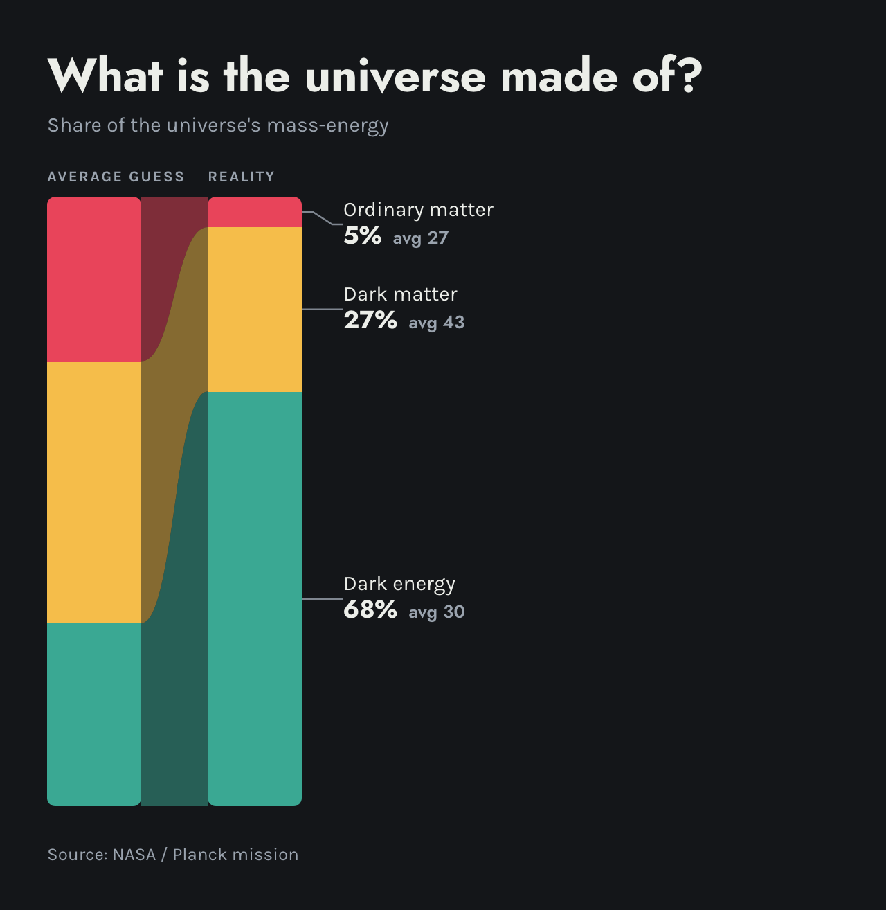
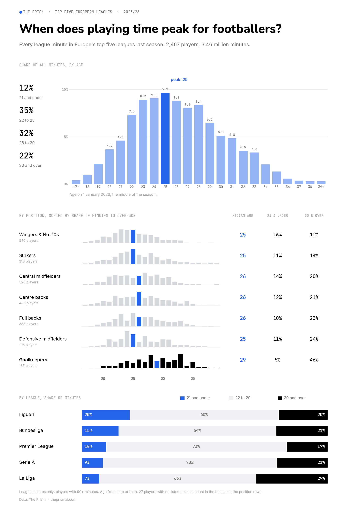
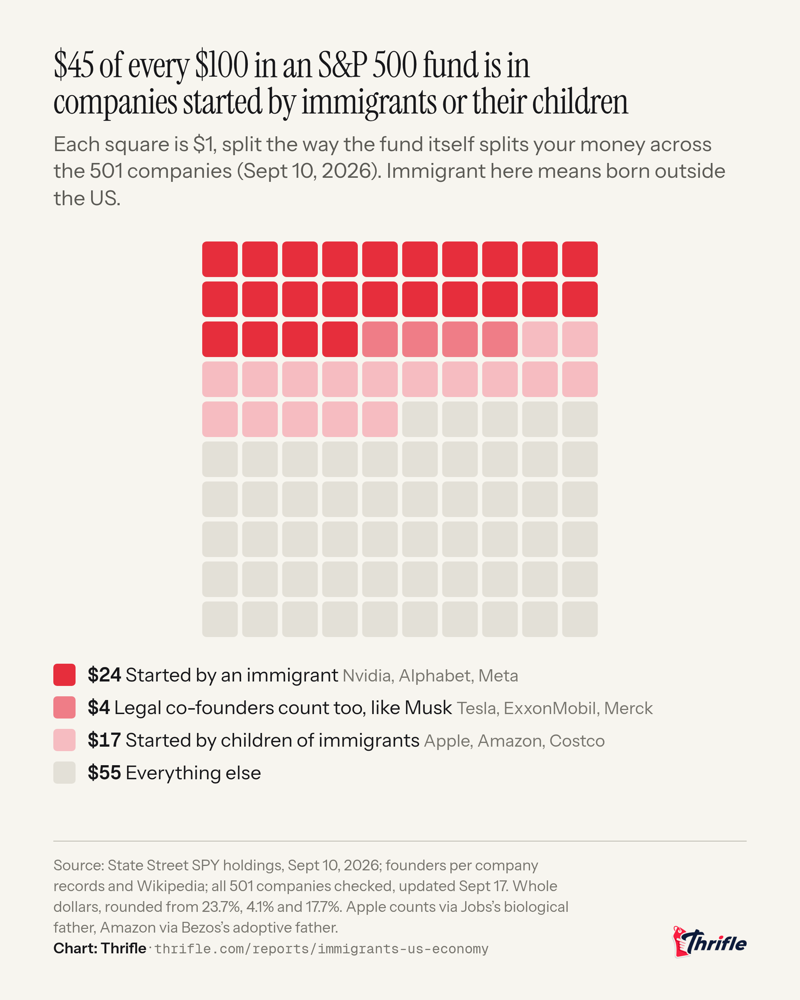

Reflections
Guest Speakers
Not startedNotes and reflections from guest speaker sessions will go here as they happen.
Reddit Research
r/dataisbeautiful/moneySpentOnDataCenters
See post here.As I scroll through the subreddit, data is beautiful I stop and think of why data exists in the first place.
Data is everywhere, if you really think about it, so is data the universe? Without data would we still be alive?
Interesting question. Scrolling I have found this posts that examines the money spent in data centers throughout the years. This post is interesting to me
because my friend actually works in one and when he got hired a few years ago I was surprised how quickly he got on the team with no prior IT or tech experience, no hate to him
he loves his job but it was interesting to see how much this sector would quickly grow in the next 3 years after he got hired which showed how much people are needed. Data centers are particular interesting to me as well because
the amount of power it takes to run one is crazy! But we need them if we want to keep growing our use of tech in a way.
You can see where the chart absolutely explodes up, the release of ChatGPT, an AI chatbot where you can get help with almost anything on the internet. If it was ever recorded, you can probably get it through this. I remember when I
first heard about it, I didn't want to use it because I thought I would get stupider, and I didn't use it for the next 2 years. I was doing everything by my own research and brain. But when Google Gemini came out, I didn't even know I was using
AI until I realized all my Google searches were actually coming from AI in a way. Even if I didn't use it, it has been a huge part of my life now, a quick Google search, well, AI is helping; talking to my Alexa, AI is helping me; trying to calculate something fast, AI is helping me.
I got sucked into the world of AI like a lot of people, now it is just a part of our daily lives. In a way I feel smarter because of it, all the information I want to seek, I have a companion with me. Obviously you need to think for yourself, and I will always advocate for that, but we
live in a world where we can all have personal assistants no matter what our social class is. Though I am really against AI art!!! BAN AI ART. Every time I see a flyer or poster done with AI I get this sense of disgust, like I will not be attending that event or place because you just generated
it on ChatGPT and sure maybe they don't have time or money to spend on a flyer but that just shows how much you care.
This article was written by Edouard Mathieu, Head of Data and Research at OurWorldinData.com
This representation of data impacts my engagement by seeing the immense growth spur of money being spent in this sector if I were to do the same thing I would make a graph chart showing the particular year and money spent. Overall
this is where our world is headed if we want to grow our technology use which means a trade off for our environment, which then the question arises, are we moving backwards?

r/dataisbeautiful/whatIsOurUniverseMadeOf
See post here. When I think of the Universe I think of an endless amount off darkness just miles and miles of nothing. This post caught my eye because if I would be asked this question I would probably say
that the universe is mostly made of dark matter which is basically just, actually I am not sure what it is to be honest, it is just this invisible type of matter that we still a hard time knowing what it actually is.
The universe has always fascinated me. I wanted to be an astronaut as a kid, I would watch space videos all night because I thought it was so cool, and I still think it is, I just lost interest in actually being an astronaut these days.
This data is kind of misleading because at the bottom it says it was from Nasa but in reality as I looked into it deeper the person who posted this just asked friends and family, 53 people to be exact. As soon as I discovered this it made sense.
I don't think majority of human beings or at least know what the universe might be made of. If I was asked as a kid I would just say night or dark. The representation of this data impacts my engagement by having a nice looking graph and not so many information
that my eyes quickly know what is going on. If I had to do this differently I would simply just make a graph chart of some sorts and have more thoughts of what the universe might be not just those 3 options. It looks like maybe there were only 3 options to choose
from, from the start and the people he asked just had to give a percentage. Oh well, not the cleanest but for those 53 people he asked we can see a big difference of what they thought to what actually is correct.

r/dataisbeautiful/footballAgePeak
See post here.When I was kid I loved to play soccer, thats how I got into running. My senior year of high school I wanted to be better at soccer so I joined the cross country team. I ended up ditching soccer for track that same year. I was 17 at the time. These days a lot more 17 year
olds are going pro at soccer compared to any other age in time. Which is super interesting to me and the age one peaks not just in soccer but in athletic sports. In running the male athlete usually peaks in the mid 30's some even late 30's while in soccer this data is showing
that when you are 25, you will peak in playing minutes which you can interpret that as ones prime.
This data came from every player who played at least 90 league minutes in the Premier League, La Liga, Serie A, Bundesliga or Ligue 1 last season, which are the top 5 leagues in Europe and one might say in the world. This data impacts my engagement by making me stop and think that
athletes really have just a few years compared to a lifetime where they can excel in their respective sport. Knowing this it makes me think about my personal athletic goals and making them that much bigger, since I know I have a limited time before I go downhill and my knees don't work
as best as they can.
Another interesting thing about this is that goalies actually play longer the older they get which is pretty cool to see. I interpret this as the more older you are the more experience you get on where to stand or know where the balls are coming from compared to that of a young goalie.
We can also see that La Liga which is Spain's first division league only gave 7% of minutes to those younger than 21 while the French league Ligue 1 gave almost over 20% which makes me think that one values the development of young players more than the other.
Overall this is the most interesting data I have come across with and I really enjoyed looking at this. If I had to this differently I don't think I would know where to start. I would be curious to see how all the leagues in the world would say not just the top 5. I know once footballers get older
they tend to move to "lower" leagues so the data might be interesting to see. I really enjoyed this one

r/dataisbeautiful/ImmigrantsAndTheS&P500
See post here. As a child of immigrant parents from Mexico I really resonated with this data. I came to the US when I was 6 months old and have lived here since. I have a work permit which allows me to work and go to school and even invest in the stock market!
I started investing a few years ago and grew my portfolio to a decent amount. Now I am using these funds to help pay for my college which in turn takes a little stress off my shoulders knowing I can focus on running and school without having to stress about finances in a way.
I think investing is the coolest thing a person can do, you can invest in a lot places or even in yourself to that matter.
This data shows how much of the money you invest goes to companies that were started by immigrants or immigrant children and as we can see it is almost half of the S&P500 which are the top 500 companies in the USA.
One can say that some of these are the biggest companies in the US, like Google, Apple, and Meta. Data from this chart came from an individual person looking through the SPY's database and made there own chart. If I were to do this, I would add a lot more things, like where did they come from or
where did their parents came from. I do think this data is misleading as sometimes companies have multiple founders, so who were counted on this? Over all this impacts my engagement by having more of a personal connection with these findings. It makes me appreciate where I came from and even motivates me to know
that I can have a company someday that people will invest their money too and contribute to this country the way it has helped me.

Narratives
The Matrix
"What are you trying to tell me? That I can dodge bullets? "No, Neo... I'm trying to tell you that when you're ready... You won't have to.." and then later in the movie he stops the bullets mid air and they just fall to the ground. As a kid I thought that was the coolest thing ever and I still think that today.
I was sitting in the couch and each Saturday night after the soccer games Telemundo (Spanish Cable Channel) would play a movie. My dad had fallen asleep and my mom was out with her brother. Trinity out running the cops (the opening scene) starts playing and I am hooked instantly. Dark, late at night, nothing playing but the tv
and my 8 year old self seeing something I hadn't seen ever, apart from cartoons right in front of me. That whole night something in my brin shifted. That whole movie It felt like I actually started thinking, like I had never thought before until then. After the movie ended I was kind of scared, amused, inlighted, this weird feeling crawling up my skin,
like everything I had known was a lie. I didn't even notice my dad leave the room. I had never seen something like that.
The matrix is one or might be my favorite movie of all time, the way the oracle tells Neo that he doesn't have to believe what she tells him really speaks to me. So many times in my life I have been told what I can or cannot do but at the end of the day it is up to me top decide that. In a personal level hispanic culture
sees cross country as a rich white people sport which is true but being the only hispanic person out in the course makes me want to succeed even more and prove that I can be just as fast or even faster.